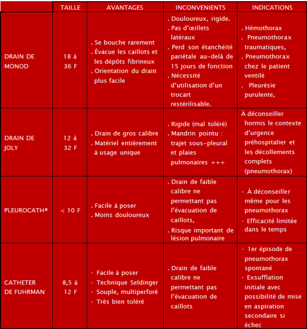
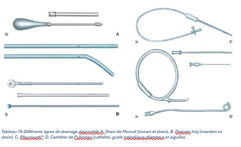

Le drainage pleural est l'évacuation d'épanchements aériques ou liquidiens intra- pleuraux. La gravité de l'épanchement tient moins à sa nature qu'à son retentissement sur l'hématose.
• Un franchement compressif aboutit au tassement du poumon sous-jacent, au collapsus alvéolaire et à la constitution d'un effet shunt. Il peut parfois aussi refouler le médiastin et compromettre la ventilation du poumon sain.
• Même en l'absence de compression, il faut craindre l'organisation de l'épanchement et la formation d'une coque fibreuse qui peut fixer le collapsus pulmonaire et diminuer les capacités ventilatoires de façon définitive.
Le but du drainage est donc d'évacuer cet épanchement, de prévenir la conséquence d'une compression pulmonaire et, point essentiel, de maintenir le poumon » à la paroi » afin d'éviter la formation d'une enveloppe fibreuse.
La réalisation d’un drainage thoracique est un geste courant, souvent urgent et parfois vital qui doit être maîtrisé par tout praticien exerçant tout ou une partie de son activité dans un service d’urgences. Un dispositif de drainage thoracique fait d’ailleurs partie intégrante du matériel d’une salle d’accueil des urgences vitales.
Il est essentiel de connaître l'anatomie des poumons et de la plèvre pour une exécution confortable de la procédure et la prévention des complications. Le site habituel pour le placement d'un drain thoracique est le triangle de sécurité, qui est délimité antérieurement par le bord latéral du grand pectoral, postérieurement par le bord antérieur du latissimusdorsi et inférieurement par une ligne imaginaire tracée au niveau du mamelon. Le sommet du triangle est formé par l'aisselle. Il correspond généralement au quatrième ou cinquième espace intercostal de la ligne médio-axillaire. Le triangle de sécuritépermet d'éviter l'artère mammaire interne et évite également la dissection à travers les muscles et le tissu mammaire.
Il existe trois couches de muscles intercostaux (l'intercostal externe, l'intercostal interne et l'intercostal interne). Comme le faisceau neurovasculaire intercostal se trouve dans le sillon du bord inférieur de la côte supérieure, le drain thoracique est généralement inséré juste au-dessus de la côte inférieure afin d'éviter de la blesser.
Les drains sont des tubes cylindriques creux en chlorure de polyvinyle ou en silicone conçus pour être placés dans la cavité pleurale. Ils ont également des trous latéraux conçus pour augmenter la surface d'absorption du liquide ou de l'air et pour permettre une autre voie de drainage en cas de blocage de l'extrémité du tube. Une bande radio-opaque est présente sur le côté du drain thoracique pour faciliter la visualisation sur les radiographies pulmonaires. L'orifice le plus proximal du tube thoracique, l'œil sentinelle, est généralement situé sur cette bande et est visible sur la radiographie thoracique comme un défaut dans la ligne. La position de cet œil sentinelle nous aide à nous assurer que tous les trous sont à l'intérieur de la cavité pleurale. Ces systèmes sont classiquement séparés en drain dit « de gros calibre » (drain de Joly ou de Monod) et drain dit « de petit calibre » (cathéter de Fuhrman ou Pleurocath®)
 La valve de Heimlich est une valve simplement munie d’un clapet antiretour en latex. Son usage ne se conçoit qu’à la condition d’une surveillance rigoureuse car elle expose au risque d’épanchement compressif en cas d’obstruction ou de mise en place incorrecte (inversion du sens).
Le drain est relié à un système permettant d'évacuer l'épanchement sans reflux et en particulier sans risque d'irruption d'air dans la plèvre. Le montage la plus simple comporte :
• Une tubulure de gros calibre, suffisamment rigide pour que ses parois ne puissent se collaber, et assez souple pour être « traite » avec les doigts s'il faut chasser un éventuel coagulum ;
• Un raccord transparent et cylindrique la reliant au drain. Ce raccord ne doit pas réduire la lumière de la tubulure, ce qui interdit l'usage des raccords coniques ;
• Un tube en verre faisant suite à la tubulure qui plonge dans un bocal le fond est rempli d'un mélange d'eau stérile et de soluté de Dakin ;
• Un second tube beaucoup plus court qui met l'intérieur du bocal en communication avec l'air ambiant et se trouve donc à la pression atmosphérique.
Le bocal est placé sur le sol, donc au-dessous du plan du thorax du malade à plus d'un mètre de l'orifice de sortie du drain. Ce système constitue une soupape de sécurité et ne doit jamais être soulevé car le contenu du bocal refluerait dans la plèvre.
Pour obtenir un drainage régulier et une réexpansion pulmonaire plus sûre, la prise d'air peut être raccordée à une source de vide. Le bocal sert alors intermédiaire entre la source de vide et le drain (qui ne doit jamais être branché directement). La dépression moyenne qu'il faut choisir est de l'ordre de 30 cm d'eau. Elle est atteinte progressivement et ne doit pas dépasser
60 cm d'eau. Ce système peut recevoir un autre bocal qui sert de collecteur en cas d'épanchement liquidien. Il est placé en premier, interposé entre la tubulure de drainage et le bocal où oscille le tube plongeant.
La soupape de Jeanneret est utilisée quand on redoute des variations brutales de pression, en particulier dans les suites d'un traumatisme thoracique ou après une intervention thoracique. On introduit un troisième bocal muni d'une prise d'air à tube plongeant qui sert de régulateur de pression ou de soupape. Il existe actuellement des systèmes compacts en matière plastique à usage unique qui fonctionnent sur le même principe (un compartiment de recueil l'épanchement jouant le rôle de bocal collecteur, un compartiment scellé sous eau qui constitue le dispositif anti-retour, un compartiment jouant le rôle de la soupape de Jeanneret et permettant de régler le niveau de dépression souhaité).
Elles sont représentées par les pneumothorax, hémothorax et les rares épanchements pleuraux liés à une rupture œsophagienne.
Quelques remarques s’imposent :
• Le pneumothorax compressif impose une exsufflation à l’aiguille en urgence et non un drainage thoracique. Celui-ci est réalisé secondairement ou en cas d’échec de l’exsufflation.
• Chez les patients ventilés, les pneumothorax de faible abondance découverts au scanner, doivent être drainés puisqu’un patient sur trois est susceptible de développer un pneumothorax compressif.
• L’indication de drainage est d’autant plus large que le pneumothorax est abondant et le patient instable (au plan respiratoire, hémodynamique).
• Les hémothorax et hémopneumothorax doivent être évacués précocement (le caillotage pleural nécessite sinon secondairement une thoracoscopie avec lavage).
La connaissance d’une adhérence du poumon à la paroi thoracique contre-indique la réalisation d’un drainage pleural percutané. Un guidage par échographie ou une vidéo- thoracoscopie peut être nécessaire.
Comme pour tout geste invasif, il faut s’assurer de la correction préalable d’éventuels troubles de l’hémostase (TCA < 1,5 fois le témoin, TP > 45 % et numération plaquettaire supérieure à 100 giga/l).
| Au cours de la mise en place du drain | Au cours du drainage | Après l’ablation du drain |
| • Hémorragies : plaies des vaisseaux intercostaux, mammaires internes, organes intrathoraciques
• Perforations : poumon, foie, rate, estomac, vaisseaux médiastinaux, diaphragme, œsophage, côlon gauche, implants mammaires • Emphysème souscutané • Syncope vagale • Mort subite (irritation des nerfs vagaux) • Embolie gazeuse • Trajets sous-pleuraux |
• Compressions : syndrome de Claude-Bernard- Horner, artère sous- clavière, pontage aortocoronaire, ventricule droit
• Œdème pulmonaire de réexpansion • Empyème • Fistule bronchopleurale • Infection de paroi • Évacuation incomplète • Pneumothorax compressif (clampage) • Chute du drain |
• Pseudo-anévrisme de l’artère pulmonaire
• Hernie cardiaque • Rupture du drain (fragments intra pleuraux) • Emphysème souscutané (fuite d’air et ablation trop précoce) • Cicatrices inesthétiques • Récidive de l’épanchement |
• Une asepsie chirurgicale stricte nécessite :
o Un antiseptique cutané ;
o Des compresses stériles ;
o Une casaque stérile ;
o Des gants stériles ;
o Des champs stériles dont un champ troué.
• L'anesthésie locale est réalisée avec :
o Une seringue stérile de 20 ml ;
o Une aiguille à biseau long pour injection intradermique ;
o De la xylocaïne à 1%.
• Le drain pleural et son trocart doivent être de calibre suffisant.
• Le passage et la fixation du trocart nécessitent :
o Un bistouri à lame étroite ;
o Deux pinces de Kôcher et des ciseaux ;
o Deux aiguilles droites serties de fil non résorbable ;
o Pansement stérile ;
• Le système d'aspiration.
L'indication de l'insertion d'un drain thoracique doit être reconfirmée et toute contre- indication s'il y a lieu, doivent être écartées.
• Le côté de la mise en place du drain intercostal doit être reconfirmé par une auscultation et par une radiographie du thorax.
• Établissement d'un accès intraveineux : Il est important de disposer d'un accès intraveineux fonctionnel avant de commencer la procédure, afin de ne pas perdre de temps à sécuriser un accès en cas d'urgence.
• Il est conseillé de surveiller le pouls, la pression artérielle et la saturation artérielle tout au long de la procédure. Les patients peuvent avoir besoin d'un supplément d'oxygène pendant la procédure.
• Prémédication : La pose d'un drain intercostal étant une procédure douloureuse et anxiogène, le malade est prémédiqué par une association vagolytique (atropine 0,5 mg) et anxiolytique (benzodiazepines).
Des grands principes simples méritent d’être rappelés. On ne doit jamais introduire un drain en dessous du niveau du mamelon, ni en position plus interne que le mamelon, ni par un orifice de drainage préalable, ni par l’orifice d’une plaie.
Deuxième ou troisième espace intercostal (EIC), en dehors de la ligne médioclaviculaire, patient en position semi assisse (surtout si PNO) ou en décubitus dorsal. Cette voie apporte une plus grande sécurité lorsque la position de la coupole diaphragmatique n’est pas connue. Elle favorise l’évacuation des épanchements gazeux. Le risque essentiel de cette technique réside dans l’embrochage de l’artère mammaire interne. De plus c’est une voie moins efficace pour drainer les hémothorax des patients le plus souvent en décubitus dorsal. Enfin, elle laisse des séquelles inesthétiques.
La zone d’insertion se situe au niveau du triangle de sécurité décrit précédemment, patient en décubitus latéral où a défaut, en décubitus dorsal, le bras homolatéral à la lésion est en abduction voire derrière la tête pour exposer le creux axillaire. C’est la voie la plus communément réalisée. Elle a l’avantage de favoriser les écoulements liquidiens. Le risque principal est de drainer trop bas et de léser la coupole diaphragmatique ainsi que les organes intra-abdominaux sous-jacents.
Les épanchements aériques auront toujours tendance à se diriger vers l’extrémitécéphalique et les épanchements liquidiens vers l’extrémité caudale du thorax. La direction d’insertion du drain doit donc être choisie en conséquence.
Pour un épanchement aérique pur, le drainage antérieur est théoriquement le plus efficace. Dans cette indication, lors de l’introduction d’un drainage par voie latérale, celui-ci devra être dirigé en direction céphalique et vers la partie antérieure du thorax.
En revanche, dans les épanchements liquidiens, la voie latérale est la voie de drainage de choix. Le drain sera inséré en direction caudale et postérieure.
Dans les situations particulières d’épanchement mixte (hémo-pneumothorax en traumatologie), l’emploi de drains de gros calibre, positionnés en direction céphalique et postérieure permettent habituellement une vacuité pleurale correcte.
Le cas particulier des épanchements cloisonnés et/ou suspendus doit faire appel à des techniques de drainage guidées par l’imagerie scannographique ou échographique afin de sécuriser le geste.
Une pose aseptique est essentielle pour limiter le risque d’infection du site opératoire et l’empyème pleural : asepsie chirurgicale avec utilisation d’une casaque stérile, d’un callot, d’un masque facial et de gants stériles après lavage antiseptique des mains. La peau du patient est désinfectée en trois temps sur une large surface puis des champs stériles sont mis en place
L’espace intercostal est repéré, on réalise l’anesthésie locale en infiltrant la peau en quelques centimètres, de façon tangentielle, puis en profondeur par des injections en rayon de roue. Quand la cavité pleurale est atteinte, on constate un bullage d’air ou bien un reflux de liquide dans la seringue. On retire alors lentement l’aiguille en infiltrant de nouveau l’espace intercostal.
Une ponction exploratrice préalable (seringue en aspiration), confirme la bonne position et la nature de l’épanchement évitant, pour certains, les malpositions sous diaphragmatique, intra-splénique ou intra-hépatique. Une ponction blanche signifie un problème de repérage de l’épanchement et interdit la mise en place du drain. [68]
La peau est incisée au bistouri sur une longueur permettant l’introduction du trocart. Il faut ensuite créer un trajet pour le trocart à travers l’espace intercostal, oblique, en rasant le bord supérieur de la côte inférieure de cet espace intercostal. Pour créer ce trajet, on dissèque prudemment l’espace intercostal soit avec une pince à hémostase courbe, soit avec le doigt. Le trocart est ensuite enfoncé avec son mandrin au travers de la paroi, une main retient le trocart alors que l’autre l’enfonce, ce qui permet d’éviter une avancée trop brutale du trocart quand la plèvre est pénétrée et de limiter le risque de blessure des organes intrathoraciques. Lorsque la plèvre pariétale est franchie, on ressent une sensation de ressaut.
Le mandrin du trocart est retiré. On vérifie que de l’air et/ou du liquide s’évacue. On introduit alors le drain par le trocart. On oriente le drain vers l’apex en cas d’épanchement aérique, vers le bas en cas d’épanchement liquidien ou mixte. Le trocart est ensuite retiré en le faisant coulisser sur le drain. On ôte alors le mandrin interne et on poursuit la progression du drain dans la plèvre en l’enfonçant.
Le drain est ensuite connecté au système d’aspiration puis fixé solidement à la peau par un fil. Un deuxième fil est placé en U autour de l’incision (fil d’attente) qui servira à fermer ultérieurement l’orifice de pleurotomie lorsque le drain sera retiré. Un pansement avec des compresses et des bandes élastiques autocollantes est mis en place autour du drain.
• Le drain doit être maintenu stérile
• Toutes les manipulations doivent être faites à distance du drain lui-même
• En aucun cas, le drain ne doit être ouvert à l’air libre
• Tous les raccordements doivent se faire après double clampage
• Tous les patients doivent recevoir une analgésie adéquate après l'intervention.
Une fois le drain mis en place, connecté et fixé, on demande une radiographie de thorax de contrôle de face, et, théoriquement, de profil. L’intérêt du cliché de profil est de mieux apprécier le caractère « horizontal » ou « vertical » (trajet vers l’apex ou vers la base) des drains posés dans la région axillaire (approche latérale).
Le drain fonctionnel transmet les variations de la pression intra pleurale, on observe ainsi une oscillation du liquide de drainage synchrone aux cycles respiratoires.
On ne clampe jamais un drain qui bulle !
Le clampage d’un drain ne bullant plus depuis plus de 24 heures est une pratique répandue. Ce clampage est acceptable à condition que le patient soit surveillé par un personnel habitué à la gestion du drainage pleural mais ne fait pas l’objet de recommandations (danger potentiel, faible niveau de preuves).
Comme toutes les techniques invasives, l’utilité du drainage thoracique doit être réévaluée tous les jours. Un retrait est classiquement envisageable lorsque les conditions suivantes sont réunies :
Pour un pneumothorax : accolement du poumon à la paroi, arrêt du bullage supérieur de 12 à 24 heures et pour certaines persistances de l’accolement après la mise en siphonage (suppression de l’aspiration), ou clampage.
Pour les épanchements liquidiens, le drainage doit ramener un liquide séreux en quantité inférieure à 200 ml par 24 heures et le poumon doit être accolé à la paroi sur la radio pulmonaire.